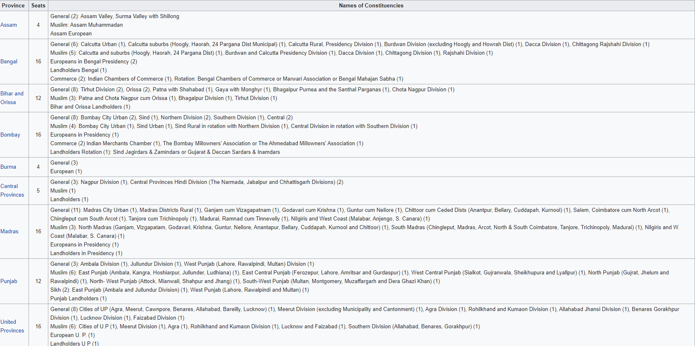

Legislative Central Government
Role of Government
The main role of Legislative is to make rules they discuss the rules as their level like if it's Central then they discuss it in the parliament in hindi it's called Sansad they discuss with the member of the parliament and they are also chose by voting which is only done by 18+ people because children can not always know if the people they are choosing are good or bad so they can make a wrong decision and because of that the whole country will suffer that is why the opportunity is only given to 18+ or adults.
Influences of the Government on citizens life
If we choose the wrong person or the parliament makes a wrong decision then the whole country can suffer with crimes or like accidents and many more so the people in the sansad bhavan are chosen very carefully and after they bare chosen all of the laws will be discussed with them so if they make a wrong decision the whole country will suffer.
